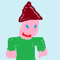

Catalogue
Category
Gnome
Pot
Product name
Description
Category
Stock
Cost per unit

Test Gnome
Test gnome do not use.
Gnome
5
£9.99
Add to basket
Wishlist
Just a Pot
A simple pot that tries its best.
Pot
1
£3.50
Add to basket
Wishlist